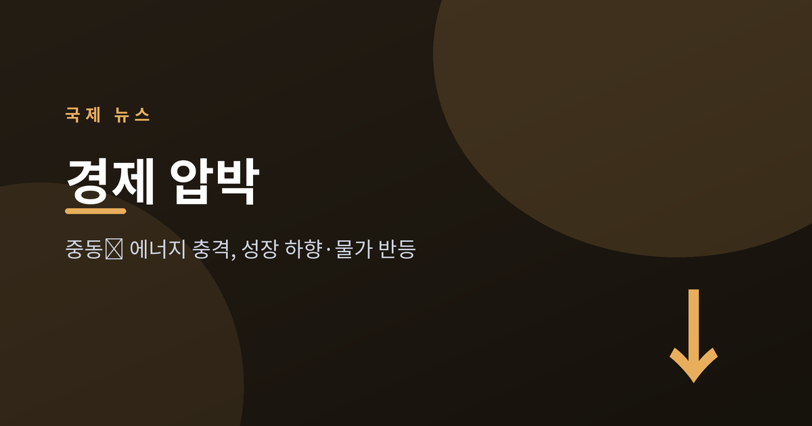
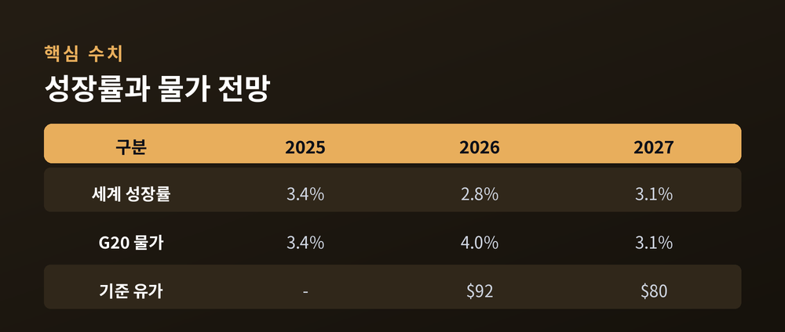
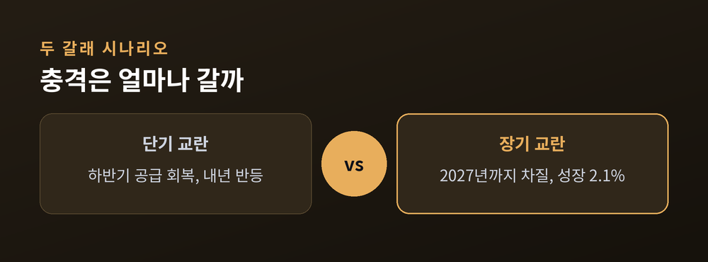
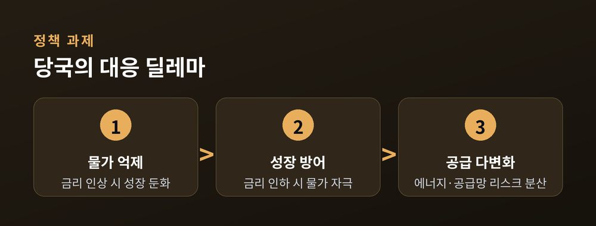

중동發 에너지 충격에 성장률 하향, 물가는 반등

경제협력개발기구(OECD)가 최근 세계 경제 전망을 다시 끌어내렸습니다. 보고서 제목부터 '압박받는(Under Pressure)'입니다. 중동에서 시작된 에너지 충격이 성장은 짓누르고 물가는 밀어 올리는, 까다로운 국면을 예고했습니다.
OECD는 세계 경제성장률 전망을 올해 2.8%로 제시했습니다. 지난해 실적치 3.4%에서 크게 낮아진 수치입니다. 다만 2027년에는 3.1%로 회복할 것으로 내다봤습니다. 반면 물가는 반대로 움직입니다. 주요 20개국(G20)의 소비자물가 상승률은 2025년 3.4%에서 2026년 4.0%로 오른 뒤, 2027년 3.1%로 완만하게 내려갈 것으로 전망됐습니다.
이번 전망의 핵심 변수는 중동 정세입니다. OECD는 "중동 분쟁이 세계 경제 전망을 좌우하는 지배적 힘이 됐다"고 진단했습니다. 걸프 지역의 에너지 생산과 수출에 차질이 빚어지면서 유가가 급등했고, 이것이 물가 전반을 자극했다는 설명입니다. 유가는 기준 시나리오에서 배럴당 평균 92달러 안팎으로 가정됐습니다.

이번 보고서가 눈길을 끄는 이유는 단일 숫자가 아니라 두 개의 시나리오를 나란히 제시했다는 점입니다. 중동 분쟁의 지속 기간이 불확실한 만큼, OECD는 결과가 크게 갈릴 수 있다고 보았습니다.
첫째는 '단기 교란' 시나리오입니다. 걸프 지역의 에너지 생산이 2026년 하반기부터 점차 회복돼, 성장률이 올해 잠시 둔화한 뒤 내년에 반등하는 경로입니다. 둘째는 '장기 교란' 시나리오로, 공급 차질이 2027년 후반까지 이어지는 경우입니다. 이때 세계 성장률은 2026년 2.1%, 2027년 1.8%까지 주저앉고, 유가는 배럴당 115달러 수준으로 뛰며, 일부 국가는 경기 침체 문턱까지 밀릴 수 있다고 경고했습니다.
주요 경제권별 온도차도 뚜렷합니다. 올해 미국은 2.0%, 유로존은 0.8%, 중국은 4.5% 성장이 예상됐습니다. 에너지 수입 의존도가 높은 경제일수록 충격에 더 취약하다는 것이 OECD의 진단입니다.

성장은 식고 물가는 오르는 국면은 통화정책 당국에 어려운 숙제를 안깁니다. 물가를 잡으려 금리를 높이면 성장이 더 꺾이고, 성장을 떠받치려 금리를 내리면 물가를 방치하는 셈이 되기 때문입니다. OECD는 장기 교란 시나리오에서 물가 압력이 더 커져 "정책 당국, 특히 중앙은행에 어려운 상충 관계를 만든다"고 지적했습니다.
관건은 결국 중동 정세의 향방입니다. 에너지 공급이 예상보다 빨리 정상화되면 충격은 일시적 조정에 그칠 수 있습니다. 반대로 불확실성이 길어지면 그 여파는 상당 기간 이어질 수 있습니다. 무역 갈등과 관세 부담이 겹칠 경우 하방 위험은 더 커집니다. OECD는 각국에 재정 여력을 신중히 관리하고, 공급망과 에너지 조달을 다변화하라고 권고했습니다.

세계 경제는 지금 성장과 물가 사이에서 줄타기를 하고 있습니다. 숫자 몇 개보다 중요한 것은, 그 숫자를 흔드는 변수가 '우리 바깥'에 있다는 사실일지도 모릅니다.
참고 출처: OECD(경제전망 보고서·보도자료), Euronews, Fortune